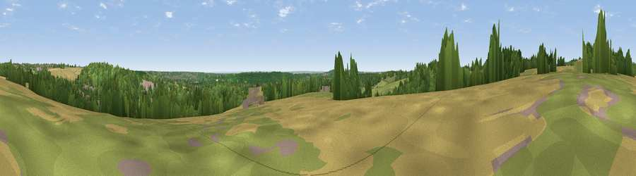

Viewpoint near Marlow Bottom
#26494 in England · top 24% of its area beats it · near Marlow BottomThe view, rendered

A 360° render of this exact spot computed from the terrain model, tree cover and land cover — summer colours, afternoon light, calibrated against photographs of famous viewpoints. Real trees, hedges and buildings will differ in detail.
The panorama
Grey silhouette: terrain skyline in each direction (720 bearings, Earth curvature and refraction included). Dashed green: skyline with trees (+15 m) and buildings (+8 m) as obstacles. Blue strip: how far the ground is visible on each bearing.
Where the view opens
Wedge length = distance to the farthest visible ground on that bearing (vegetation-aware). Rings at 10, 25 and 50 km.
What fills the view
48% woodland · 26% grassland · 18% cropland · 8% built-up
Angular shares of the visible panorama (visual magnitude), not map area. Landscape diversity 0.54 (0–1 Shannon).
Key numbers
More beautiful places nearby
The staircase of upgrades: each row has a higher view potential than everything closer. Driving times are estimates from straight-line distance, calibrated against real road routing — check an actual route before setting out.
| Place | Direction | Drive | Score |
|---|---|---|---|
| Viewpoint near Lane End | NW · 4 km | ~8 min | 48.9 |
| Fultness Wood Hill | SSE · 5 km | ~10 min | 57.8 |
| Viewpoint near Kingston Blount | NW · 13 km | ~24 min | 67.4 |
| Viewpoint near Chinnor | NW · 13 km | ~24 min | 67.9 |
| Viewpoint near Kingston Blount | NW · 13 km | ~24 min | 70.1 |
| Viewpoint near Chinnor | NNW · 13 km | ~25 min | 72.0 |
| Viewpoint near Chinnor | NNW · 14 km | ~25 min | 74.5 |
| Coombe Hill Monument | N · 18 km | ~31 min | 75.5 |
51.59161, -0.79207 · source: screening · position refined by local search. Computed location — check access rights before visiting.